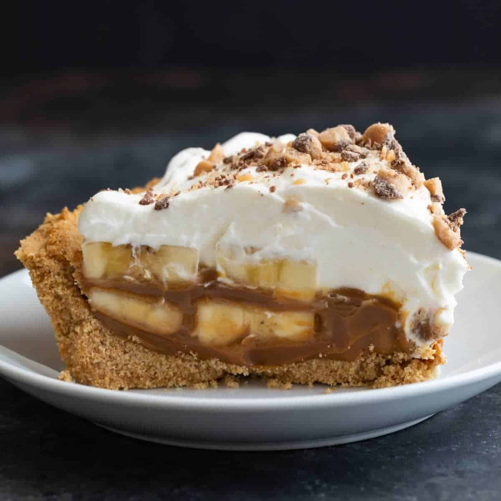

Banoffee Pie

The banoffee pie is a banana based desert, with cruncy crackers, caramel and heavy cream
Ingredients
- 150g graham cracker crumbs
- 28g sugar
- 1/8 teaspoon table salt
- 86g unsalted melted butter
- 227g heavy cream
- 3/4 teaspoon Vanilla Extract
- 14g sifted sugar
- 5 ripe bananas sliced in 1/4 thick
- 342 dulce de leche
Instructions
- To make the crust: In a medium bowl, stir together the graham cracker crumbs, confectioners’ sugar, and salt. Add the melted butter and mix until thoroughly combined.
- Press the crumbs into the bottom and up the sides of a 9" pie pan that’s at least 1 1/4" tall. Use the bottom of a measuring cup or a juice glass to help compress the crust into an even layer. Refrigerate, uncovered, while you make the whipped cream.
- To make the whipped cream: In the bowl of a stand mixer fitted with the whisk or working in a large bowl with an electric hand mixer, beat the cream and vanilla together until the mixture starts to look foamy, about 20 seconds. Sift the confectioners’ sugar into the cream and continue whisking on medium-high to high speed until the cream becomes thick, voluminous, and forms medium peaks, about 30 to 45 more seconds (be careful not to overwhip).
- To assemble the banoffee pie: Remove the pie crust from the refrigerator and pour the dulce de leche into the bottom of the crust. Use a small offset spatula or the back of a spoon to spread it into an even layer. Avoid lifting the spatula or spoon while spreading, as this pulls up crumbs from the crust.
- Shingle the banana slices on top of the dulce de leche, covering the entire surface of the pie. (Placing the banana slices on their edges and layering them at a 45° angle should allow 4 or 5 bananas to fit in the pan; it will be generously filled.)
- Scoop the whipped cream on top of the bananas and use a small offset spatula or the back of a spoon to spread it from edge to edge to cover all the bananas.
- Refrigerate the pie, uncovered, for at least 1 1/2 hours or up to 24 hours before serving. If desired, garnish the pie or individual servings with additional banana slices or a drizzle of warmed dulce de leche.
- Storage information: Store leftover banoffee pie in the refrigerator, covered, for up to 4 days. The graham cracker crust will soften over time but will still be delicious.
Home